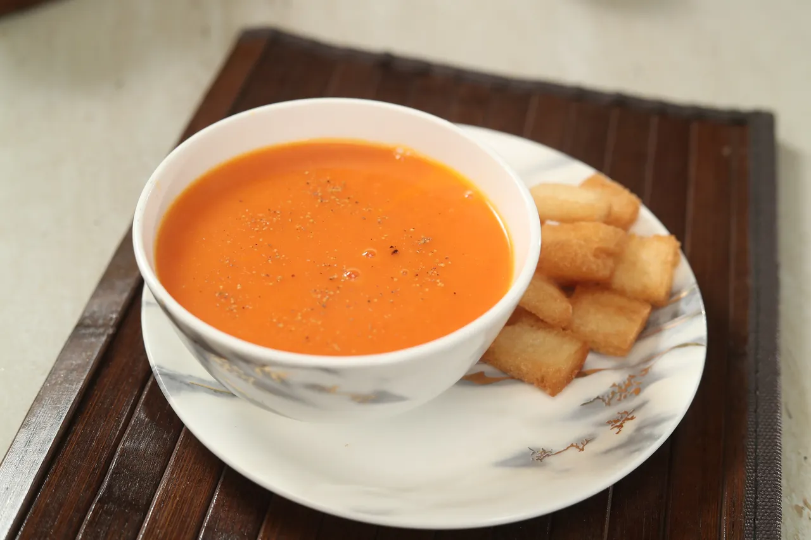

Tomato Soup

INGREDIENTS
- 4 cups ripe tomatoes, chopped
- 1 medium onion, chopped
- 2 cups vegetable broth
- 1 tablespoon olive oil
- Salt and pepper to taste
COOKING INSTRUCTIONS
- Heat olive oil in a pot over medium heat. Add chopped onion and sauté until soft.
- Add chopped tomatoes and cook for about 5 minutes until they start breaking down.
- Pour in the vegetable broth and bring the mixture to a boil. Season with salt and pepper.
- Reduce heat and let it simmer for 20 minutes to develop the flavors.
- Blend the soup until smooth, then serve hot.